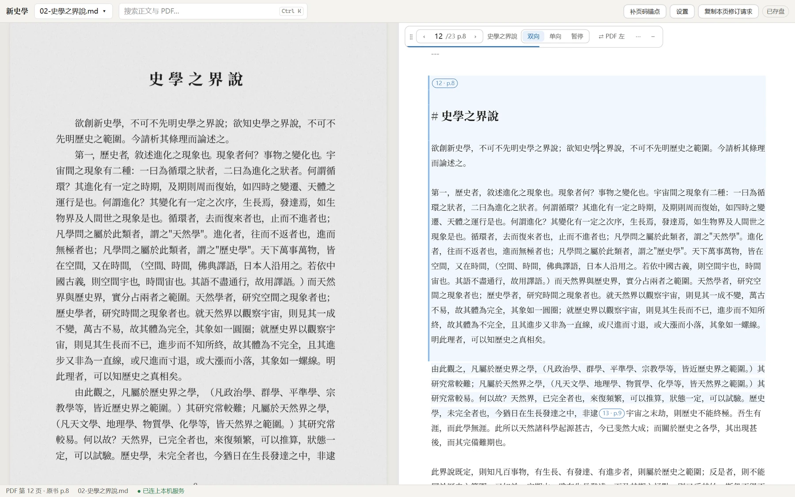
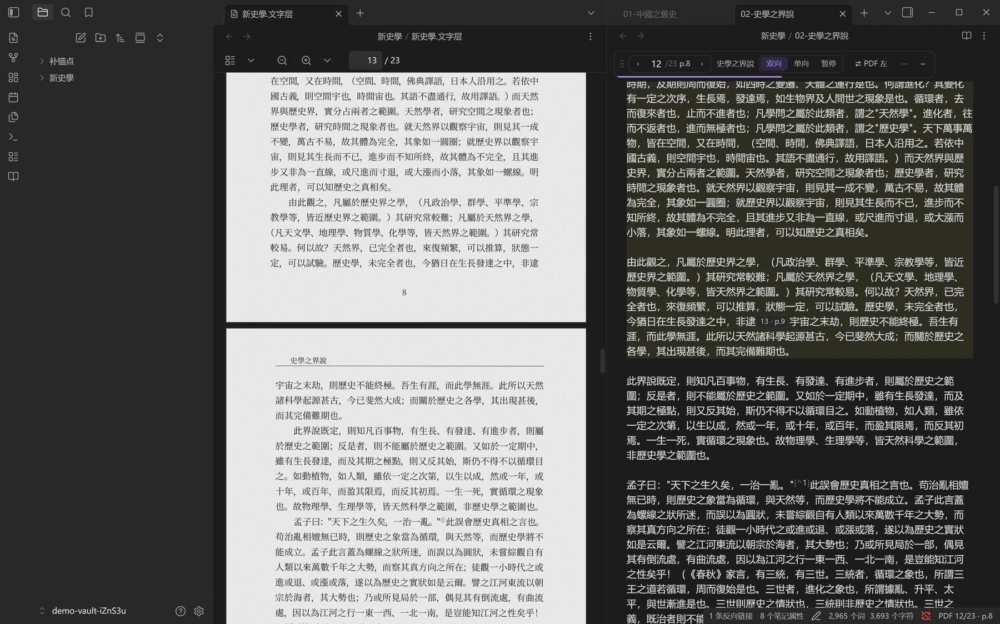
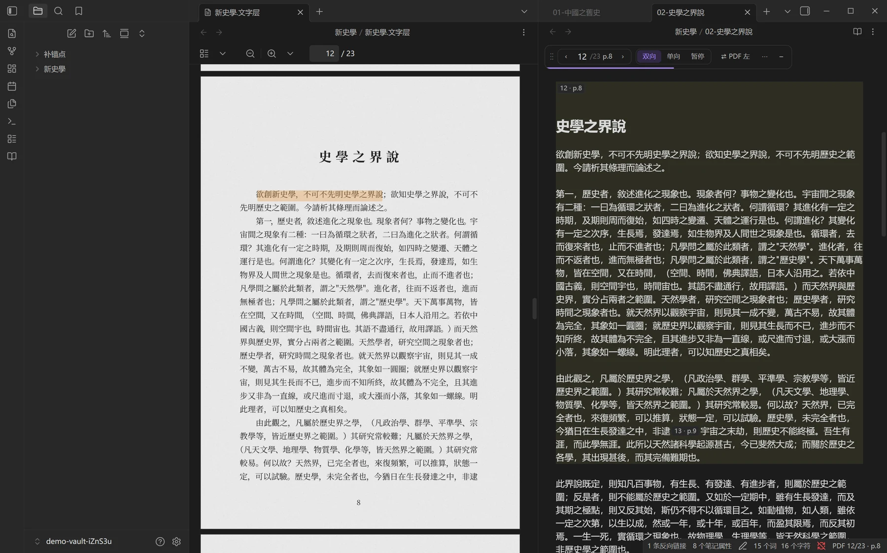

把论文与专著的 PDF，
变成能逐页对回原书的 Markdown
MinerU 重建正文、脚注、多级标题与物理页锚点；AI 对照原页只改该改的地方；然后在 Obsidian 插件或网页工作台里，左边原件、右边正文，读到哪页跟到哪页。
给现代出版物：期刊论文、研究专著、教材、横排点校整理本。古籍刻本、抄本、竖排本不在范围内。

先试一下
演示站里是梁启超《新史學》（1902，文字据维基文库，CC BY-SA 4.0）的排印本，23 页，按真实流程导入后校读过。能翻页、左右对照、选中正文逐字高亮、全文搜索，设置也能改。
演示站只读：它读的是站点自带的这本样例书，没有你本机的文件夹，所以改不了、也存不了盘。要编辑，在本机跑网页工作台（命令见安装）。
一个仓库，三样东西
| 东西 | 干什么 | 给谁用 |
|---|---|---|
| 一个统一 skill 插件 aihistory1012 |
book2md1012：导入、按原页修订、抽检通读 |
所有人；在 Claude Code（或 Codex）对话里用 |
| Obsidian 插件 PDF Sync Markdown |
左 PDF、右正文对照，按页跟随，选字逐字高亮，按页校改 | 用 Obsidian 的人 |
网页工作台web/ |
同样的对照阅读与校改，在本机浏览器里打开一本书的文件夹 | 不用 Obsidian 的人 |
三样只靠一套约定连着：正文里的物理页锚点 <!--pdf-page.N-->、印刷页锚点 <!--p.M-->、frontmatter 里的 pdf，以及 _数据/book.json。阅读工具不识字、不改内容；改内容的是对话里的 AI。
怎么用
- 导入：在对话里说「把这份 PDF 导入成 Markdown」。MinerU 云端解析一次，重建正文、脚注、多级标题与页码锚点；默认再交 PaddleOCR 第二家识别交叉核对，拿不准的字列进疑字清单。
- 对照校读、手改小错：在插件或网页工作台里打开这本书，读到哪页跟到哪页。错一两个字，直接在正文里改。
- 大错交 AI 按原页修：整段丢了、脚注错位、表格坏了，点工具条「复制本页修订请求」，粘给 Claude Code。AI 对照 PDF 原页只改这一页，锚点不动。
- 可选：抽检通读：全书导入后让 AI 抽检或逐页通读，出一份问题报告（漏段、错字、锚点、脚注），再按报告逐页修。


安装
skill：整理书的 AI 工具
把这句话发给你的 agent（Claude Code、Codex、Cursor 等）：
帮我安装 https://github.com/1012-web/AIHIST-skills-1012 里的 skills
也可以自己装：npx skills@latest add 1012-web/AIHIST-skills-1012 -g。skill 在
AIHIST-skills-1012 仓库；两家识别服务的账号与令牌需要你本人注册、粘贴，其余交给 AI。
Obsidian 插件
正在提交 Obsidian 社区插件市场；上架前从
Releases
下载 main.js、manifest.json、styles.css，放进库里的
.obsidian/plugins/aihistory-pdf-sync/，在「设置 → 第三方插件」里启用。
网页工作台（本机）
cd web
npm install
npm run workbench -- "D:\书\某本书"需要 Node.js 24 或更新。只监听 127.0.0.1，网址带令牌，不联网；编辑自动存回硬盘，硬盘上改了网页立刻刷新。
用之前要知道
- PDF 会上传到识别服务。默认 MinerU 与 PaddleOCR 两家交叉核对。未刊稿、有版权或保密顾虑的材料不要用。
- AI 会错，而且错得像真的。所以处处对照原页图；脚本只做机械活，有异常就报告，内容上的判断交 AI，拿不准会问你。
- 密钥只在本机。经本机配置窗口保存（Windows 用 DPAPI 加密），不写进仓库、不打印；插件与网页工作台不联网。